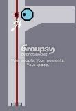

111111111111111111111111111111111111111111111111111111111111111111111111111111111111111111111111111111111111111111111111111111111111111111111111111111111111111111111111111111111111111111111111111111111111111111111111111111111111111111111111111111111111111111111111111111111111111111111111111111111111111111111111111111111111111111111111111111111111111P00000000000111111111111111110C1111111111111111111110111111111111111111111101111111111111111111111111111111111111111111111111111111111111111111111111111111111111111111111111111111111111111111111111111111111111111111111111111111111111111111111111111111111111111111111111111111111111111111111111111111111111111111111111111111111111111111111111111111111111111111111|5^396,408!2^396,456,0,-1!7^396,180,1!6^468,324,3,0,0,2!6^396,180,3,0,1,1!12^396,324
They seem to all kill the ninja at the same time...
I mean, look:

This is one frame before everything happens, the laser goes away, the drone zaps and the mine blows up...
[randomly offtopic]I just realised that 'mean' is 'naem' backwards :S[/random offtopicness]
 I don't quite know. Your computer would probably explode from the sheer rareness of this situation.
I don't quite know. Your computer would probably explode from the sheer rareness of this situation.
")